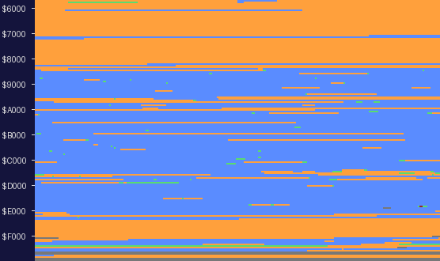

| How the game is put together |
How Cyberun is put together: what runs from loading to the menu, a game, a life and a pass of play, what sets the speed, and where everything lies in memory.
game_entry DI; JP start (the loader jumps here) start SP = $5B80; border black; build_shift_tables; JP game game every game starts here menu the title tune until a key, the menu until 0 new_game both player records cleared, 5 lives each, places dealt clear_attributes, clear_pixels, draw_panel show_player, a pause, clear_play_area into the first life at $F44C, past the reset play every later life reset_for_life the per-life tables reset; no lives left: back to game the ore back from the player record; the gone bit's BIT and SETs patched start_landscape the fly-in, until play begins the play loop at $F46C, until the death byte reaches 12: the death sequence, lose_life, round to play launch_state is $FF: level_done, the next planet, round to play
The start-up -- start to game, almost all of it build_shift_tables and build_shifted_pieces building the shift tables and the shifted landscape pieces -- took 571,650 T-states in the simulator, 0.16 seconds. Interrupts are never enabled: loader_entry and game_entry both execute DI and nothing executes EI. There is no HALT and no interrupt routine, and the game's stack is the 128 bytes under $5B80, in the printer buffer.
$F46C ship_pass the pass counted; every fourth, save_restart_point move_ship: read_controls (controls, fuel), the speeds and the steps ship_speed_from_scroll, collide_with_landscape, ship_hits_ground_objects, move_object update_shots: the shots JP scroll_landscape [a cell crossed] load_map_window, set_landscape_colours update_ground_objects before or after the landscape, by the vertical scroll draw_landscape draw_beams, draw_stars JP draw_ship: the ship, trail and jets, the pause test, fire; RET $F46F update_fuel_gauge: the gauge, check_fuel_empty $F472 spawn_tick: clouds and attackers $F475 update_objects: the death byte; the nine sky objects $F478 random the death byte at 12? the launch done? else round again
ship_pass does not return to the loop itself: it jumps to scroll_landscape, which jumps on to draw_ship, whose RET goes back to the play loop. The IY that ship_pass pushes is popped by draw_ship; the push also puts the stack at the depth the landscape renderer assumes when it reloads SP from stack_top after each piece -- checked in the simulator: draw_landscape was entered with SP $5B7A. The ship's image is redrawn on odd passes, the carried part on even ones; the side jet on odd passes and the lift jet on even; the shield timer counts on odd passes.
Nothing paces the game: with interrupts off it never waits for a frame, so a pass takes as long as its work. Measured in the simulator over 410 passes of flying -- the flight to the terrace scene, then climbing left and firing -- a pass took 59,137 to 302,721 T-states, 145,362 on average: 2.1 television frames, about 24 passes a second. Where the time went, from the play loop round to the play loop, stopped after each stage of every pass:
| Stopped at | What ran | T-states a pass | Per cent |
|---|---|---|---|
| $C3E0 | ship_pass: the controls, the ship's movement, the landscape test, the shots | 9,463 | 7 |
| $DEB3 | scroll_landscape: the origins and the window (and the ground objects when the landscape moves up) | 3,774 | 3 |
| $DEB6 | draw_landscape | 29,409 | 20 |
| $DEC4 | the ground objects, the beams, the stars | 12,995 | 9 |
| $F46F | draw_ship: the ship, trail, jets, firing | 7,299 | 5 |
| $F472 | update_fuel_gauge | 1,481 | 1 |
| $F475 | spawn_tick | 461 | 0 |
| $F478 | update_objects: the nine sky objects | 80,148 | 55 |
| $F46C | random, and back round the loop | 333 | 0 |
So a busy screen plays slower, and a sound effect -- a timing loop inside the pass -- stalls the pass it is played in. Counts kept in passes (the shield, the death sequence, the fuel's grace) are not fixed lengths of time.
death_count is the whole of the death's state: 0 alive, set to 1 by a third hit or an empty tank, counted up a pass at a time by update_objects; the play loop leaves for the death sequence at 12, which ends at $50 (see damage, fuel and dying). launch_state reaching $FF ends the level instead (see the rocket).
The two players never need to know which one is playing: their whole 105-byte records are swapped at each turn (swap_players), and the one shared table, the objects lying in the world (map_object_kinds), gets its per-player bit by patching the BIT and SET instructions that test it (spawn_objects_from_list, ship_hits_ground_objects, beam_hits_ground_object).
The game runs from $5B00 to $FFFF. Below the loaded block are the stack, the four collision-box lists over the loader's entry and some forty scratch variables in the system variables. The block holds the world's level data first, then the tunes, the sound effects and the sprites, then the code with its tables and variables, the landscape pieces at its end. Above it: the menu and the game's flow, the player records, the ship's picture, and the start-up code that becomes a sprite buffer and a bit-reversal table, over the six pages of shift tables built on the loader's leftovers.
| Addresses | Starts at | What |
|---|---|---|
| $4000-$5AFF | the display | |
| $5B00-$5B79 | stack_space | the stack, down from $5B80 |
| $5B7A-$5B7F | stack_top | the stack's top: three return addresses while the landscape is drawn |
| $5B80-$5C13 | loader_entry | the four on-screen cells' collision-box lists, over the loader's entry |
| $5C15-$5C40 | saved_step_x | scratch variables, in the system variables |
| $5C80-$5C83 | game_entry | the entry: DI, JP start |
| $5C94-$6112 | map_object_kinds | the objects lying in the world and the places pick-ups are dealt to |
| $61BC-$6C3B | landscape_map | the map: 96 columns by 28 rows of tile numbers |
| $6C3C-$70D7 | tile_table | the tile table and the tile records |
| $70D8-$731E | title_tune | the title tune and the sound effects |
| $731F-$8346 | rocket_bars_graphic | the sprite graphics |
| $8347-$E248 | landscape_end_pieces | the code, with its tables and variables |
| $E249-$E580 | flat_blit_lose_first | the POP blitters and the pieces' tables by shift |
| $E581-$E749 | flat_piece_gfx | the nine stored landscape graphics |
| $E74A-$F0FA | slope_2_shifted | their shifted copies, made at the start |
| $F10F-$F5E6 | play_area_colour | the menu and the game's flow |
| $F5E7-$F6B8 | score | the two player records |
| $F6B9-$F7E4 | ship_picture | the ship's picture, built from its add-ons |
| $F7EB-$F8FF | build_shifted_pieces | start-up code, then the compositor's buffer |
| $F900-$F9FF | bit_reverse_table | start-up code, then the bit-reversal table |
| $FA00-$FFFF | shift_tables | the loader's leftovers, then the shift tables |
The listing's entries by type, a byte a pixel, 256 to a row from $5B00 (read from the listing): code (23,384 bytes), data (17,378 bytes), variables (421 bytes), space (1,055 bytes), unused (2 bytes).

Memory from $5B00 to $FFFF, by the listing's entries.